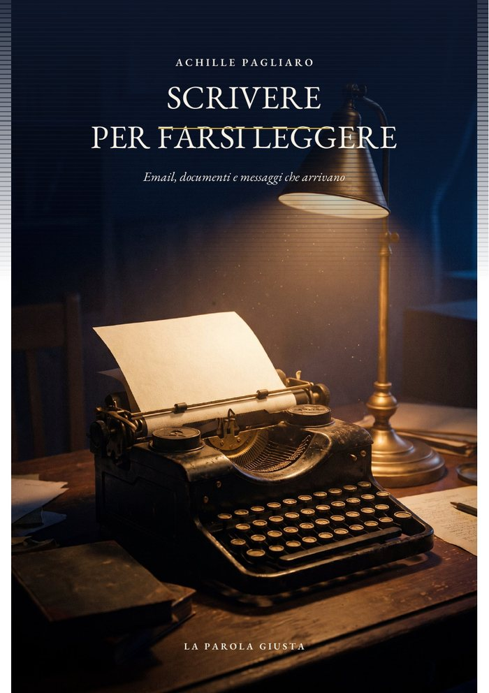

Scrivi un'email di dodici righe, curata, con tutte le informazioni necessarie. L'altro risponde tre giorni dopo con una domanda a cui avevi già risposto nella riga sette.

La reazione naturale è pensare che non abbia letto. È vero, e non nel senso che intendiamo noi: ha guardato il testo, ha estratto due o tre elementi, e ha chiuso.
I testi che mandiamo non vengono letti nel modo in cui li abbiamo scritti. Vengono scansionati, in pochi secondi, alla ricerca di tre cose: cosa riguarda, se serve fare qualcosa, e entro quando.
Tutto quello che non risponde a queste tre domande viene attraversato senza essere elaborato, indipendentemente da quanto sia stato scritto bene.
Non significa che si debba scrivere male, o che la cura sia inutile. Significa che la cura va messa in un altro posto.
Non è disattenzione altrui. È il modo normale in cui si legge sul lavoro:
Non regole di stile né eleganza della prosa: la posizione delle informazioni, la lunghezza, la presenza di una richiesta riconoscibile.
Prima l'esito, poi il contesto: la struttura dei resoconti giornalistici applicata alle email e ai verbali.
La parte più importante di un'email e quella scritta con meno attenzione, in genere alla fine, quando non si ha più voglia di pensarci.
Isolata, con un verbo e una data. Se è dentro un paragrafo, per chi legge non esiste.
Rifiuti, ritardi, cattive notizie. Metterle per iscritto le rende permanenti: un capitolo su come non peggiorarle.
La sintesi iniziale in quattro parti e una pagina, nota a tutti e usata quasi da nessuno.
La lista di controllo finale è quasi tutta fatta di rimozioni. Scrivere meglio, in pratica, vuol dire togliere.
Chi scrive immagina un lettore che non esiste. Lo immagina seduto, con tempo davanti, che comincia dalla prima riga e procede fino all'ultima, seguendo il ragionamento nell'ordine in cui è stato costruito.
Il lettore reale fa un'altra cosa. Apre il testo tra due attività, gli dà pochi secondi, decide se riguarda qualcosa di urgente, e in base a quella decisione lo legge, lo rimanda o lo chiude.
Gli esercizi si fanno sui testi che devi già scrivere: non aggiungono lavoro, cambiano il modo in cui lo fai.
L'ultimo capitolo è una lista di domande da passare su qualsiasi testo prima di mandarlo, e sono quasi tutte domande che portano a togliere qualcosa:
La prima riga dice perché sto scrivendo? Le prime tre righe bastano a capire di cosa si tratta? C'è una richiesta, ed è isolata, con un verbo e una data? Il testo contiene un argomento solo?
Ci sono parole vaghe dove servirebbe un numero o una data? Ci sono frasi con più di dieci parole prima del verbo?
Il capitolo sull'oggetto e la prima riga, da solo, cambia il tasso di risposta di quello che mandi.
Relazioni, verbali, proposte. La sintesi iniziale in una pagina è la differenza fra un documento letto e uno archiviato.
Un capitolo intero sulle cose sgradite, dove la forma scritta rende permanente quello che a voce sarebbe passato.
No. Riguarda i testi che scrivi per lavoro: email, messaggi, relazioni, verbali, proposte. Non parla di stile o di eleganza, ma di quanta parte di quello che scrivi arriva davvero a chi legge.
La tesi del libro è che scrivere bene e farsi leggere sono due cose diverse. Un testo curato in cui la richiesta è annegata in un paragrafo non viene eseguito, per quanto sia scritto bene.
Sì, c'è un capitolo dedicato. Alcune regole restano identiche, altre cambiano del tutto, e confondere i due registri è uno degli errori più comuni.
Sì: testi riportati per esteso nella versione che funziona e in quella che sembra uguale ma non produce risposta. Nell'ultimo capitolo c'è una lista di controllo da usare prima di premere invio.
Subito dopo il pagamento ricevi il link di download via email. È un PDF illustrato, leggibile su computer, tablet, telefono ed ereader.
Email, documenti e messaggi che arrivano
Pagamento unico. Ricevi il link di download subito dopo l'acquisto.
Dedica di apertura